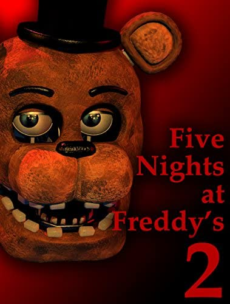

Five nights at freddy's
Superviviencia y terror

Cinco noches con freddy fue uno de los mejores juegos realisticos
y terrorificos que encabezo la lista de una manera espectacular por a hi del 2010
Basado en una pizzera real, este juego cuenta una historia macabra y aterradora
en la cual nosotros tomaremos el papel de un guardia
.Si quieres saber porque .....Pruebalo
Requisitos del sistema
Recomendados
- - Sistema operativo: "windows XP" / Vista / 7."
- - Procesador: 1.6 GHz
- - Memoria: 512 MB de RAM
- - Disco duro: 200 MB de espacio libre
- - Graficos: Shader Model 1.1 con 128 MB de VRAM
- - DirectX: 9.0c o posterior
Instrucciones
- 1- Para poder jugar tendremos primero que acernos con el, descargandolo desde el boton descargar.
- 2- Despues descomprimiremos el juego con winrar o otro gestor de archivos en la carpeta escritorio no sin antes haber desactivado el antivirus. (Esto se debe a que la mayoria de juegos son de origen desconocido y por eso es capaz de borrarlo por completo ,por lo cual lo desactivaremos para evitar cualquier percanze en la instalacion)
- 3-Echo esto abriremos la carpeta del juego y ejecutaremos el .exe
- 4-Por ultimo nos queda solo disfrutar del juego y a pasarlo bien 😁
Enlaces de descarga
🎮 Juego